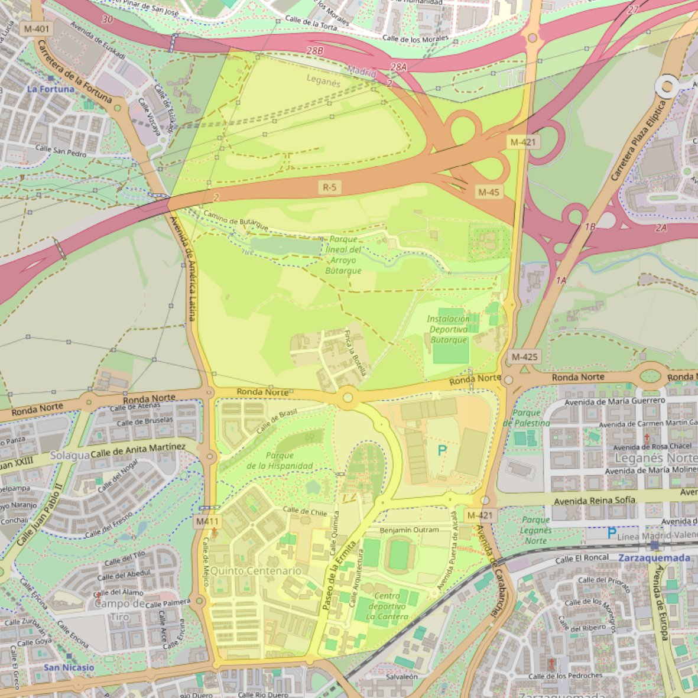

Santa Beatriz de Silva

- Arciprestazgo
- Leganés
- Población
- Leganés
- Dirección postal
- c/ Méjico, s/n
- Código postal
- 28918
- Extensión
- 2,95 km² (295 ha)
- Teléfono
- 686 529 819
- Correo electrónico
- parroquiasantabeatrizdesilva@gmail.com
Arciprestazgos y parroquias de la Diócesis de Getafe
